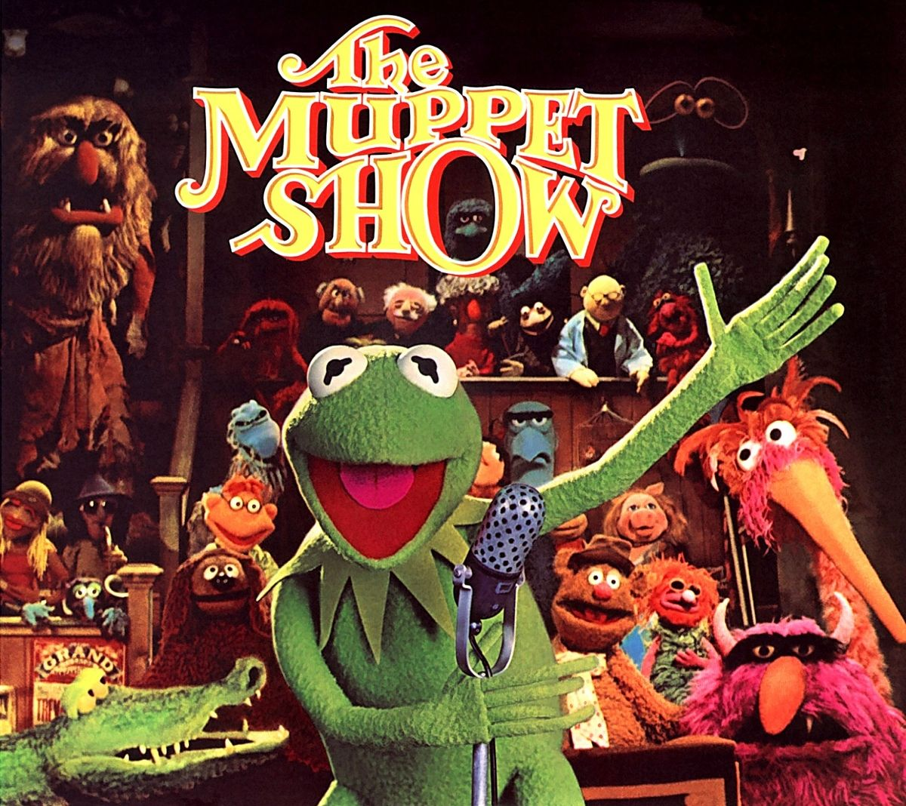
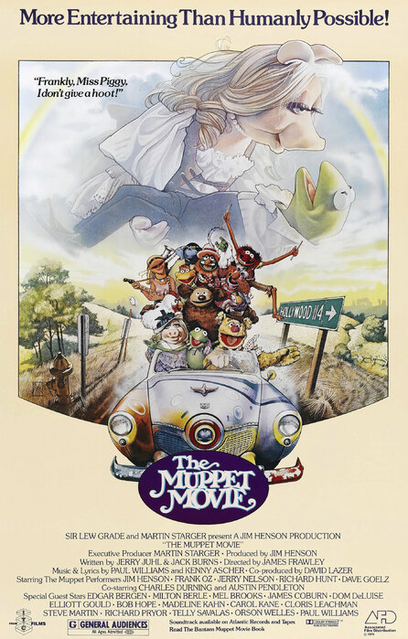

The Muppet Show
It's Time to Play the Music, It's Time to Light the Lights, It's Time to Learn A Brief History of The Muppets!

The Muppets were created by Jim Henson in the 1960s, but the show didn't happen until the 1970s. On September 5, 1976, they raised the curtains and the Muppets invaded your tv with their whimsy, showtunes, and adult humor. Every week, the Muppets were putting a show together with a famous guest. Viewers saw what was going on stage, backstage, in dressing rooms, essentially like a reality tv about putting on a show but with aburdist comedy. They had guests like Rita Moreno, Christopher Reeves, Elton John, Vincent Price, Mark Hamill... if you can think of a famous person of that time frame, there's a high chance they were a guest. Funny thing is, not many stars wanted to be on it at first, because they filmed in Britain due it being cheaper to film and produce. Overtime, guests were so happy to be apart of their world.
Within the show there were many skits. The more famous ones are "Pigs in Space!" that paraodied sci-fi media such as Star Trek, "The Swedish Chef" where a muppet chef with human hands and speaks gibberish cooks up a dish with a dash of insanity, and "The Electric Mayhem" where Dr. Teeth and the Electric Mayhem do musical sketches.The show went on till the curtains dropped March 15, 1981. The show had a total of 5 seasons with a total of 120 episodes, abuot 30 minutes each. The show was nominated for 9 BAFTA awards and 22 Primtetime Emmy Awards, but they won 4 awards.
The Muppets Movie (1979)

On June 22, 1979, history was made when the Henson Company released The Muppets Movie. The movie begins with muppets sitting down in a movie theater getting ready to watch their movie on the big screen (very meta I must say). Kermit the Frog, the showrunner of the The Muppets Show, is shown strumming his banjo swamp singing his famous song, "The Rainbow Connection". when suddenly a talent agent approaches him to push him to go to Hollywood to work in show business. Along the way, he runs into multiple muppets who join him on his journey. Kermit and his friends get into classic hijinks as they are reaching their destination. Even Big Bird from "Seasme Street" shows up for a few seconds as he's making his way to Los Angeles. Now, I'm not going to spoil the ending, that's for you to watch!
This movie started filimg on July 3, 1978 in LA and took about 87 days to film. They filmed in New Mexico, Northern California, LA, and the San Frenando Valley. In order for certain scenes to be filmed, Jim and others had to think outside the box. The shot of Kermit sitting on the log singing required Jim Henson to be in a metal container that had an air hose for him to breathe and a rubber sleeve so he could puppeter. Some scenes had the muppets in full body, such as Kermit riding his bike. A crane system with strings were used to keep the bike up and Kermit's limbs were attached to the bike. Some were controlled by a remote controlled. The final scene (not a spoiler) had about 250 muppets with 150 puppeters performing.
The film earned more than $65 million in Canada and the US. This movie was the highest grossing puppet film for about 32 years until The Muppets (2011) released. It is considered a cult classic and loved by many.